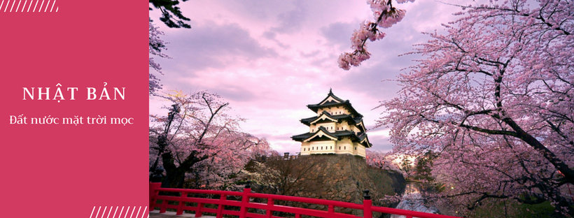
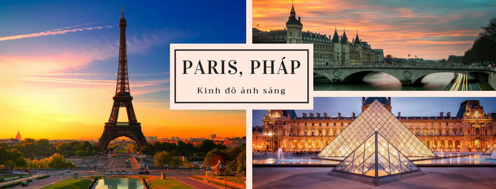
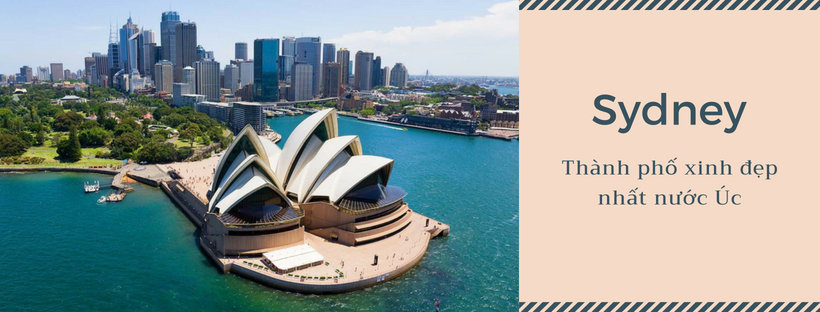
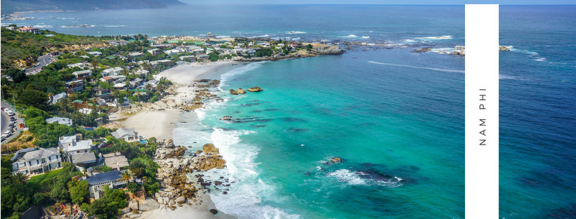

Welcome to TravelWorld
Nếu bạn băn khoăn không biết nên đi đâu vào các kì nghỉ hay dịp lễ thì TravelWorld sẽ giúp bạn hiểu rõ hơn về các địa điểm nổi tiếng cũng như văn hóa của đất nươc bạn lựa chọn để tận hưởng kì nghỉ. Xin chào mừng đến với TravelWorld
Du lịch Bangkok–Thái Lan

Nếu bạn đang tìm kiếm một chuyến du lịch nước ngoài giá rẻ để “đổi khẩu vị”, bạn sẽ không cần phải đau đầu suy nghĩ khi chọn nước láng giềng Thái Lan để có những trải nghiệm mới. Bangkok được biết đến là một trong những thủ đô năng động nhất Đông Nam Á cùng với sự hấp dẫn về văn hóa, cuộc đường phố sôi động, ẩm thực cuốn hút và phong phú, giá cả phải chăng. Bangkok là sự pha trộn tương phản giữa những tòa nhà chọc trời hiện đại và những đền thờ Phật giáo cổ xưa.
Du lịch Nhật Bản
Đất nước mặt trời mọc hay xứ sở hoa anh đào là những cái tên thân thuộc gần gũi, gợi nhắc về đất nước Nhật Bản từ lâu nay đã không còn xa lạ với người dân Việt. Ngày nay, Nhật Bản trở thành một điểm đến đầy sức hút không chỉ bởi bản sắc văn hóa riêng biệt, những con người với phẩm chất đáng ngưỡng mộ, một xã hội văn minh hiện đại mà xứ Phù Tang còn sở hữu những danh lam thắng cảnh tuyệt đỉnh, các di sản thế giới.
Du lịch Thổ Nhĩ Kì

Một địa điểm du lịch nước ngoài từ 20 triệu nằm giữa hai lục địa Á và Âu đó là Thổ Nhĩ Kỳ. Nơi đây được mệnh danh là “ngã tư các nền văn minh thế giới”, tạo nên sự đa dạng về địa lý, văn hóa, tôn giáo và lối sống của người dân nơi đây. Chính sự giao thoa hoàn hảo này đã biến Thổ Nhĩ Kì trở thành quốc gia độc đáo nhất và vùng đất cuốn hút khách du lịch trên toàn thế giới bởi những công trình kiến trúc cổ đại, di sản văn hóa đặc sắc, nền ẩm thực phong phú cùng những sử thi hào hùng, vang danh một thời.
Du lịch Paris, Pháp
Paris chính là thủ đô và cũng là niềm tự hào của nước Pháp, từ lâu đời nay “kinh đô ánh sáng” đã là một trung tâm văn hóa, chính trị và kinh tế của châu Âu, đó là lý do đển thành phố này đón xấp xỉ 30 triệu lượt du khách hàng năm. Với những công trình kiến trúc trứ danh, các bảo tàng lâu đời sở hữu những bộ sưu tập vô giá, những khu phố cổ kính, những trung tâm mua sắm sầm uất, khung cảnh lãng mạn đến siêu lòng và nên ầm thực đặc trưng tạo nên một Paris đầy ấn tượng.
Du lịch Sydney, Úc
Nói đến du lịch Úc, không thể bỏ qua Sydney. Nằm ở bờ biển phía đông nam, Sydney là thành phố lớn và lâu đời nhất của nước Úc, mỗi năm thu hút hàng chục triệu lượt du khách trong nước và quốc tế. Bao quanh bởi biển Thái Bình Dương nên Sydney sở hữu hơn 100 bãi biển lớn nhỏ. Có mức sống cao nhất ở Úc, Sydney là thành phố văn minh, hiện đại bậc nhất với nhiều địa điểm đã trở thành biểu tượng nổi tiếng của nước Úc.
Du lịch Nam Phi
Nói đến địa điểm du lịch nước ngoài ở Châu Phi thì có lẽ không thể không nói đến Nam Phi. Đây là một quốc gia phát triển nằm ở phía nam châu Phi và khí hậu không hề khắc nghiệt như đại đa số các quốc gia của lục địa này, Nam Phi có thời tiết dễ chịu, ôn hòa quanh năm vì vậy rất thích hợp cho du lịch. Cũng là một trong những nơi có cảnh vật thiên nhiên hoang dã ngoạn mục nhất thế giới, du khách du lịch Nam Phi sẽ được tận mắt chiêm ngưỡng và trải nghiệm vẻ đẹp hùng vĩ của thiên nhiên và cơ hội nghỉ dưỡng tại những khu resort đẳng cấp 5 sao.